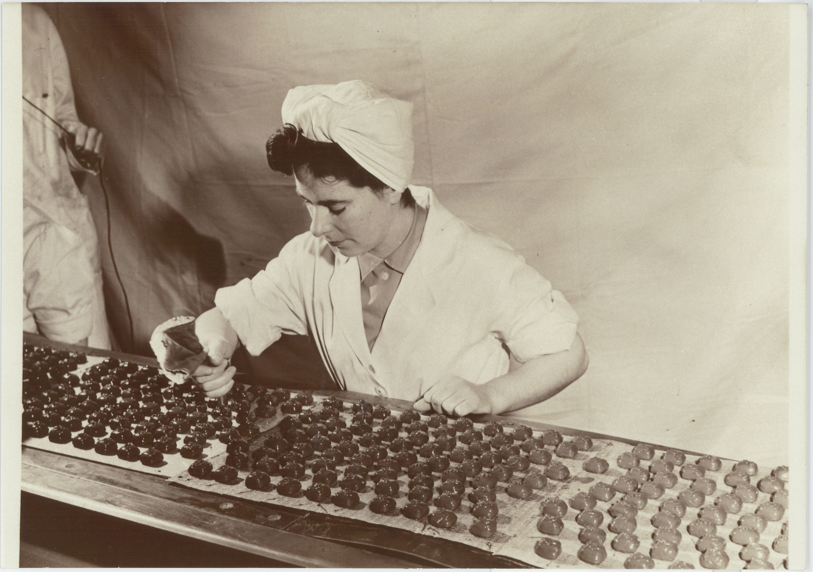
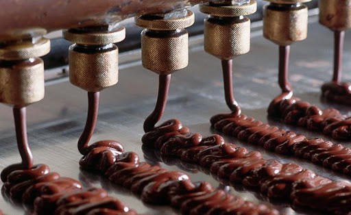

A vállalat eredete a 18. századig nyúlik vissza egy magyar testvérpárra az ipari forradalom idején. Külföldön
kezdték a cégüket ahol naggyá válhattak, de később honvágyuk miatt visszatértek szülőhazájukba. Itt folytatták
elkezdett bizniszüket. Először csak csokoládéval foglalkoztak, de később már bővült palettájuk, oly annyira,
hogy mára már nincs olyan édesség fajta amit nem találnak meg nálunk. A legsikeresebb és legeladottab, minden
gyermek
kedvence a gumicokor. A csokoládé készítés azóta is az eleinte megalkotott módszer szerint
történik,némi újításokkal, de a csokoládé formálás még mindig a hagyományok szerint kézzel történik, ezért is
lehet olyam kiváló és pompás a Royal Candy. Nagy gondossággal figyelünk a minőségre, mint ahogyan azt elődeink is
tették.

Bonbonjainkat manapság már gép önti ki de a belső krémet vagy meggyet professzionális dolgozóink helyezik az
édességbe.

Fontos, hogy haladjunk a korral és technikai innovációkat hozzunk be gyártás folyamatunkba, hogy a világ minden
tájára eljuthasson mennyei édességeink sokasága.
| Az első Csokoládé | Az első karamella | Az első Gumicukor |
|---|---|---|
| 1765 | 1812 | 1897 |